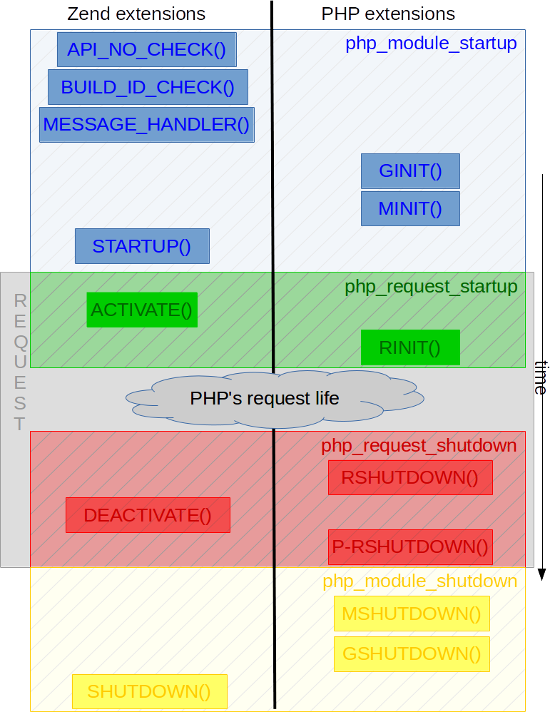

Zend-расширения¶
PHP поддерживает два вида расширений:
Обычные расширения PHP (PHP extensions) — наиболее распространённый вид
Zend-расширения — более редкий вид, дающий доступ к другим хукам
В этой главе подробно рассматриваются основные различия между zend-расширениями и PHP-расширениями, когда следует использовать одно вместо другого, а также как создавать гибридные расширения, то есть расширения, являющиеся одновременно и PHP-, и Zend-расширениями (и зачем это делать).
Различия между PHP-расширениями и Zend-расширениями¶
Для начала: в исходном коде PHP расширения PHP называются “PHP-модулями”, тогда как zend-расширения называются “Zend-расширениями”.
Поэтому в недрах PHP, если вы встречаете ключевое слово “extension”, в первую очередь стоит подумать о zend-расширении. А если встречаете ключевое слово “module” — скорее всего речь о PHP-расширении.
В обычной жизни мы говорим о “PHP-расширениях” в противовес “Zend-расширениям”.
Отличает их способ загрузки:
PHP-расширения (также называемые “модулями” PHP) загружаются в INI-файлах строкой вида “extension=pib.so”
Zend-расширения загружаются в INI-файлах строкой вида “zend_extension=pib.so”
Это единственное видимое отличие, которое заметно со стороны пользовательского PHP-кода.
Но с точки зрения внутреннего устройства всё совсем по-другому.
Что такое zend-расширение?¶
Прежде всего, zend-расширения компилируются и загружаются так же, как и PHP-расширения. Поэтому, если вы ещё не читали главу о сборке расширений PHP, стоит это сделать — она актуальна и для zend-расширений.
Note
Если вы ещё не сделали этого, ознакомьтесь с информацией о расширениях PHP — далее мы будем сравнивать с ними. Zend-расширения имеют очень много общих концепций с PHP-расширениями.
Вот как выглядит zend-расширение. Обратите внимание, что для того чтобы движок смог загрузить ваше zend-расширение, нужно опубликовать не одну, а две структуры:
/* Main Zend extension structure */
struct _zend_extension {
char *name; /*
char *version; * Some infos
char *author; *
char *URL; *
char *copyright; */
startup_func_t startup; /*
shutdown_func_t shutdown; * Specific branching lifetime points
activate_func_t activate; * ( Hooks )
deactivate_func_t deactivate; */
message_handler_func_t message_handler; /* Hook called on zend_extension registration */
op_array_handler_func_t op_array_handler; /* Hook called just after Zend compilation */
statement_handler_func_t statement_handler; /*
fcall_begin_handler_func_t fcall_begin_handler; * Hooks called through the Zend VM as specific OPCodes
fcall_end_handler_func_t fcall_end_handler; */
op_array_ctor_func_t op_array_ctor; /* Hook called on OPArray construction */
op_array_dtor_func_t op_array_dtor; /* Hook called on OPArray destruction */
int (*api_no_check)(int api_no); /* Checks against zend_extension incompatibilities
int (*build_id_check)(const char* build_id); */
op_array_persist_calc_func_t op_array_persist_calc; /* Hooks called if the zend_extension extended the
op_array_persist_func_t op_array_persist; * OPArray structure and has some SHM data to declare
*/
void *reserved5; /*
void *reserved6; * Do what you want with those free pointers
void *reserved7; *
void *reserved8; */
DL_HANDLE handle; /* dlopen() returned handle */
int resource_number; /* internal number used to manage that extension */
};
/* Structure used when the Zend extension gets loaded into the engine */
typedef struct _zend_extension_version_info {
int zend_extension_api_no;
char *build_id;
} zend_extension_version_info;
Note
Как обычно, читайте исходный код. Zend-расширения обрабатываются в файле Zend/zend_extension.c (и .h)
Как видите, zend-расширения сложнее, чем PHP-расширения, так как у них больше хуков, и эти хуки гораздо ближе к движку Zend и его виртуальной машине (самым сложным частям всего исходного кода PHP).
Зачем нужно zend-расширение?¶
Предупредим сразу: до тех пор, пока у вас нет очень глубоких знаний о внутренней виртуальной машине PHP и пока вам не нужно встраиваться глубоко внутрь неё, zend-расширение вам не нужно — обычного PHP-расширения будет достаточно.
Сегодня наиболее известные zend-расширения в мире PHP — это opcache, Xdebug, phpdbg и Blackfire. Но ведь вы знаете десятки обычных PHP-расширений в придачу, не так ли?! Это явный признак того, что:
В большинстве ваших задач zend-расширение не понадобится
Zend-расширения также могут использоваться как PHP-расширения (подробнее об этом далее)
PHP-расширение всё же способно на очень многое.
Как правило, zend-расширения нужны для двух видов задач: отладчиков и профилировщиков.
Note
Для zend-расширений, в отличие от PHP-расширений, не существует генератора болванки.
Warning
Для zend-расширений нет ни генератора, ни подсказок. Zend-расширения предназначены для опытных программистов: их сложнее понять, они затрагивают более глубокое поведение движка и обычно требуют продвинутых знаний внутреннего устройства PHP.
В целом, если вам нужно создать отладчик, понадобится zend-расширение. Для профилировщиков можно обойтись обычными PHP-расширениями — это тоже может сработать, всё зависит от ваших потребностей.
Кроме того, если вам нужно управлять порядком загрузки расширений, zend-расширения вам в этом помогут (об этом мы ещё поговорим).
Наконец, если ваша цель — “просто” добавить в PHP новые сущности (функции, классы, константы и т.д.), используйте PHP-расширение, но если вам нужно изменить текущее поведение PHP, вероятно, лучше подойдёт zend-расширение.
Мы не можем дать здесь точных правил, но можем объяснить, как всё это работает, чтобы вы сами составили представление о возможностях zend-расширений по сравнению с PHP-расширениями.
Также вы можете создать гибридное расширение, которое является одновременно и zend-расширением, и PHP-расширением (это нетривиально, но вполне допустимо и позволяет программировать в обоих “мирах” одновременно).
Управление версиями API и конфликтами¶
Вы знаете, что PHP-расширения перед загрузкой проверяются по нескольким правилам, чтобы определить, совместимы ли они с версией PHP, в которую вы пытаетесь их загрузить. Это подробно описано в главе о сборке PHP-расширений.
Для zend-расширения действуют те же правила, но немного иначе: движок будет использовать опубликованную вами
структуру zend_extension_version_info, чтобы понять, что делать.
Структура zend_extension_version_info, которую вы объявляете, содержит только два поля, которые движок
использует при запуске загрузки вашего zend-расширения:
ZEND_EXTENSION_API_NOZEND_EXTENSION_BUILD_ID
ZEND_EXTENSION_API_NO проверяется при загрузке вашего zend-расширения. Но отличие в том, что если это число не
совпадает с числом в вашем zend-расширении, у вас всё равно остаётся шанс быть загруженным. Движок вызовет ваш хук
api_no_check(), если вы его объявили, и передаст в него текущий ZEND_EXTENSION_API_NO среды выполнения PHP.
Здесь вы должны сообщить, поддерживаете ли вы этот номер API, просто вернув эту информацию движку. Если вы его не
поддерживаете, движок не загрузит ваше расширение и выведет об этом предупреждающее сообщение.
То же самое касается других настроек ABI, таких как ZEND_DEBUG или ZTS. Там, где PHP-расширения откажутся
загружаться при несовпадении, zend-расширениям даётся шанс быть загруженными — движок проверяет это через хук
build_id_check(), передавая ему ZEND_EXTENSION_BUILD_ID. И снова вы сообщаете, совместимы вы или нет. И
снова, если вы скажете “нет”, движок не загрузит ваше расширение и выведет об этом предупреждающее сообщение.
Напомним, что нумерация API и ABI подробно описана в главе о сборке PHP-расширений.
Эти возможности принудительно навязывать что-то движку на практике используются редко.
Note
Видите, насколько zend-расширения сложнее PHP-расширений? Движок менее строг и предполагает, что вы знаете, что делаете, — к лучшему или к худшему.
Warning
Zend-расширения действительно должны разрабатываться опытными и продвинутыми программистами, так как проверки движка здесь слабее. Он явно предполагает, что вы полностью владеете тем, что делаете.
Подводя итог по совместимости API: каждый шаг подробно описан в zend_load_extension().
Далее возникает проблема конфликтов между zend-расширениями. Одно может быть несовместимо с другим, и чтобы
справиться с этим, у каждого zend-расширения есть хук с именем message_handler. Если он объявлен, этот хук
вызывается у каждого уже загруженного расширения при загрузке очередного zend-расширения. Вам передаётся указатель
на его структуру zend_extension, и вы можете определить, какое именно это расширение, и прервать работу, если
решите, что возникнет конфликт. Это тоже используется на практике довольно редко.
Хуки жизненного цикла zend-расширений¶
Если вы помните про жизненный цикл PHP (рекомендуем прочитать отдельную главу об этом), то zend-расширения встраиваются в этот жизненный цикл следующим образом:

Можно заметить, что наши проверочные хуки api_no_check(), build_id_check() и message_handler()
вызываются только при запуске PHP. Эти три хука подробно описаны в предыдущей части (выше).
А теперь важный момент, который нужно запомнить:
MINIT()вызывается у PHP-расширений до zend-расширений (startup()).RINIT()вызывается у zend-расширений (activate()) до PHP-расширений.Процедура завершения запроса у zend-расширений (
deactivate()) вызывается междуRSHUTDOWN()иPRSHUTDOWN()у PHP-расширений.MSHUTDOWN()вызывается у PHP-расширений первым, а у zend-расширений — после этого (shutdown()).
Warning
Как и для любого хука, здесь существует строго определённый порядок, который нужно освоить и запомнить для расширений со сложными сценариями использования.
На практике об этом можно сказать следующее:
Zend-расширения запускаются после PHP-расширений. Это позволяет zend-расширениям быть уверенными, что при их запуске все PHP-расширения уже загружены. Благодаря этому они могут подменять обработчики и встраиваться в PHP-расширения. Например, если вам нужно заменить обработчик функции
session_start()своим собственным, сделать это проще в zend-расширении. Если делать это в PHP-расширении, вам нужно быть уверенным, что вы загружаетесь после расширения session, а это может быть непросто проверить и обеспечить (хотя зависимость всё же можно указать через zend_module_dep). Тем не менее, помните, что статически скомпилированные расширения всегда запускаются раньше динамически скомпилированных. Поэтому для случая с session это не проблема, так как ext/session загружается статически. До тех пор, пока некоторые дистрибутивы (привет, FreeBSD) не изменят это…Zend-расширения вызываются до PHP-расширений при поступлении запроса. Это значит, что у них есть возможность изменить состояние движка применительно к текущему запросу до того, как PHP-расширения начнут использовать этот изменённый контекст. Opcache использует такой трюк, чтобы выполнить свои сложные задачи раньше, чем какое-либо другое расширение успеет этому помешать.
То же самое при завершении запроса: zend-расширения могут считать, что все PHP-расширения уже завершили обработку запроса.
Практика: моё первое zend-расширение на примере¶
Здесь мы на практике подробно разберём некоторые хуки, которые могут использовать zend-расширения, и что с ними делать, на примере очень простого сценария.
Warning
Помните, что разработка zend-расширений обычно требует глубокого владения движком Zend.
Для нашего примера мы спроектируем zend-расширение, использующее следующие хуки:
fcall_begin_handler— мы будем определять, какие инструкции сейчас выполняет виртуальная машина, и выводить сообщение. Этот хук перехватывает два вида событий: вызов require/include/eval или вызов любой функции/метода.op_array_handler— мы будем определять, какая функция PHP сейчас компилируется, и выводить сообщение.message_handler— мы будем обнаруживать загрузку других zend-расширений и выводить сообщение.
Вот наша болванка, которую нам нужно написать самостоятельно, поскольку для zend-расширений, в отличие от PHP-расширений, генератора болванки не существует. Файлы называются pib.c и php_pib.h, структура файлов остаётся такой же, как и для PHP-расширений, просто мы объявим в них другие вещи:
#include "php.h"
#include "Zend/zend_extensions.h"
#include "php_pib.h"
#include "Zend/zend_smart_str.h"
/* Remember that we must declare such a symbol in a Zend extension. It is used to check
* if it was built against the same API as the one PHP runtime uses */
ZEND_DLEXPORT zend_extension_version_info extension_version_info = {
ZEND_EXTENSION_API_NO,
ZEND_EXTENSION_BUILD_ID
};
ZEND_DLEXPORT zend_extension zend_extension_entry = {
"pib-zend-extension",
"1.0",
"PHPInternalsBook Authors",
"http://www.phpinternalsbook.com",
"Our Copyright",
NULL, /* startup() : module startup */
NULL, /* shutdown() : module shutdown */
pib_zend_extension_activate, /* activate() : request startup */
pib_zend_extension_deactivate, /* deactivate() : request shutdown */
pib_zend_extension_message_handler, /* message_handler() */
pib_zend_extension_op_array_handler, /* compiler op_array_handler() */
NULL, /* VM statement_handler() */
pib_zend_extension_fcall_begin_handler, /* VM fcall_begin_handler() */
NULL, /* VM fcall_end_handler() */
NULL, /* compiler op_array_ctor() */
NULL, /* compiler op_array_dtor() */
STANDARD_ZEND_EXTENSION_PROPERTIES /* Structure-ending macro */
};
static void pib_zend_extension_activate(void) { }
static void pib_zend_extension_deactivate(void) { }
static void pib_zend_extension_message_handler(int code, void *ext) { }
static void pib_zend_extension_op_array_handler(zend_op_array *op_array) { }
static void pib_zend_extension_fcall_begin_handler(zend_execute_data *ex) { }
Пока всё неплохо: это расширение компилируется как zend-расширение, но ничего не делает. Точнее, почти ничего.
Первые поля структуры zend_extension отображаются в phpinfo():
This program makes use of the Zend Scripting Language Engine:
Zend Engine v3.1.0, Copyright (c) 1998-2017 Zend Technologies
with pib-zend-extension v1.0, Our Copyright, by PHPInternalsBook Authors
Это обязательно: движок реагирует так — он выводит первые поля структуры zend_extension в информацию о движке
для каждого загруженного zend-расширения.
Это всё, что нужно знать на данный момент. Теперь заполним эти функции с пустым телом:
static void pib_zend_extension_message_handler(int code, void *ext)
{
php_printf("We just detected that zend_extension '%s' is trying to load\n", ((zend_extension *)ext)->name);
}
Как было сказано ранее, message_handler() — это специальный хук, который zend-расширения могут объявить, чтобы
получать уведомления о загрузке другого zend-расширения. Но нужно быть внимательным к порядку. Вы должны
зарегистрировать наше zend-расширение “pib” первым, а затем уже другое zend-расширение (например, opcache), так как
message_handler() вызывается только при загрузке zend-расширения — очевидно, вы должны быть загружены раньше,
чтобы его объявить. Курица и яйцо.
Затем начнём погружаться в движок с помощью нашего хука op_array_handler:
static void pib_zend_extension_op_array_handler(zend_op_array *op_array)
{
smart_str out = {0};
smart_str_appends(&out, "We just compiled ");
if (op_array->function_name) {
uint32_t i, num_args = op_array->num_args;
if (op_array->fn_flags & ZEND_ACC_CLOSURE) {
smart_str_appends(&out, "a closure ");
} else {
smart_str_appends(&out, "function ");
smart_str_append(&out, op_array->function_name);
}
smart_str_appendc(&out, '(');
/* The variadic arg is not declared as an arg internally */
if (op_array->fn_flags & ZEND_ACC_VARIADIC) {
num_args++;
}
for (i=0; i<num_args; i++) {
zend_arg_info arg = op_array->arg_info[i];
if (arg.class_name) {
smart_str_append(&out, arg.class_name);
smart_str_appendc(&out, ' ');
}
if (arg.pass_by_reference) {
smart_str_appendc(&out, '&');
}
if (arg.is_variadic) {
smart_str_appends(&out, "...");
}
smart_str_appendc(&out, '$');
smart_str_append(&out, arg.name);
if (i != num_args - 1) {
smart_str_appends(&out, ", ");
}
}
smart_str_appends(&out, ") in file ");
smart_str_append(&out, op_array->filename);
smart_str_appends(&out, " between line ");
smart_str_append_unsigned(&out, op_array->line_start);
smart_str_appends(&out, " and line ");
smart_str_append_unsigned(&out, op_array->line_end);
} else {
smart_str_appends(&out, "the file ");
smart_str_append(&out, op_array->filename);
}
smart_str_0(&out);
php_printf("%s\n", ZSTR_VAL(out.s));
smart_str_free(&out);
}
Note
При необходимости ознакомьтесь с информацией о движке Zend.
Этот хук вызывается на втором проходе компилятора. Когда компилятор Zend запускается, он компилирует скрипт или
функцию. Перед самым завершением он запускает второй проход компиляции, цель которого — разрешить неразрешённые
указатели (значение которых не могло быть известно во время компиляции скрипта). Это функция pass_two(),
исходный код которой вы можете изучить.
В исходном коде pass_two() видно, что он вызывает op_array_handler() у каждого уже зарегистрированного
zend-расширения и передаёт ему в качестве аргумента текущий, ещё не полностью разрешённый OPArray. Именно это мы
получаем как аргумент нашей функции. Затем мы его анализируем и пытаемся извлечь некоторую информацию о нём:
текущую компилируемую функцию, информацию о её аргументах и т.д. Это очень похоже на то, что делает Reflection API,
только здесь мы немного менее точны, так как OPArray ещё не полностью разрешён — мы всё ещё находимся внутри этапа
компиляции. Мы могли бы также собрать значения аргументов по умолчанию (что здесь не сделано), но это сильно
усложнило бы пример, поэтому мы решили не показывать эту часть.
Note
Напомним, что про smart_str подробно рассказано здесь, про zval здесь, про OPArray здесь, и т.д…
Продолжим?:
static void pib_zend_extension_activate(void)
{
CG(compiler_options) |= ZEND_COMPILE_EXTENDED_INFO;
}
static void pib_zend_extension_deactivate(void)
{
CG(compiler_options) &= ~ZEND_COMPILE_EXTENDED_INFO;
}
static void pib_zend_extension_fcall_begin_handler(zend_execute_data *execute_data)
{
if (!execute_data->call) {
/* Fetch the next OPline. We use pointer arithmetic for that */
zend_op n = execute_data->func->op_array.opcodes[(execute_data->opline - execute_data->func->op_array.opcodes) + 1];
if (n.extended_value == ZEND_EVAL) {
php_printf("Beginning of a code eval() in %s:%u", ZSTR_VAL(execute_data->func->op_array.filename), n.lineno);
} else {
/* The file to be include()ed is stored into the operand 1 of the OPLine */
zend_string *file = zval_get_string(EX_CONSTANT(n.op1));
php_printf("Beginning of an include of file '%s'", ZSTR_VAL(file));
zend_string_release(file);
}
} else if (execute_data->call->func->common.fn_flags & ZEND_ACC_STATIC) {
php_printf("Beginning of a new static method call : '%s::%s'",
ZSTR_VAL(Z_CE(execute_data->call->This)->name),
ZSTR_VAL(execute_data->call->func->common.function_name));
} else if (Z_TYPE(execute_data->call->This) == IS_OBJECT) {
php_printf("Beginning of a new method call : %s->%s",
ZSTR_VAL(Z_OBJCE(execute_data->call->This)->name),
ZSTR_VAL(execute_data->call->func->common.function_name));
} else {
php_printf("Beginning of a new function call : %s", ZSTR_VAL(execute_data->call->func->common.function_name));
}
PHPWRITE("\n", 1);
}
При старте запроса мы указываем компилятору генерировать в создаваемом OPArray дополнительную расширенную
информацию. За это отвечает флаг ZEND_COMPILE_EXTENDED_INFO. Расширенная информация — это хуки OPCode
виртуальной машины, то есть компилятор будет генерировать специальный OPCode перед каждым вызовом функции и после
завершения каждого вызова функции. Это OPCode’ы FCALL_BEGIN и FCALL_END.
Вот пример OPCode’ов для простого вызова функции PHP, где строка ‘foo’ передаётся единственным аргументом:
L9 #1 INIT_FCALL 112 "foo"
L9 #2 SEND_VAL "foo" 1
L9 #3 DO_FCALL
L11 #4 RETURN 1
А теперь то же самое, но после того как мы указали компилятору генерировать дополнительные OPCode’ы:
L9 #3 INIT_FCALL 112 "foo"
L9 #4 EXT_FCALL_BEGIN
L9 #5 SEND_VAL "foo" 1
L9 #6 DO_FCALL
L9 #7 EXT_FCALL_END
L11 #8 RETURN 1
Как видите, OPCode’ы, отвечающие за отправку аргумента и вызов функции, оказались окружены двумя OPCode’ами —
EXT_FCALL_BEGIN и EXT_FCALL_END. Эти два OPCode’а в дальнейшем выполнят обработчики fcall_begin() и
fcall_end() у каждого объявленного zend-расширения, включая наше.
Помните, что с точки зрения движка вызовом функции считается как настоящий вызов функции, так и выполнение
подключаемого (include) PHP-файла, или выполнение нового блока eval(). Посмотрите на дизассемблированный
require():
L9 #3 EXT_FCALL_BEGIN
L9 #4 INCLUDE_OR_EVAL "foo.php"
L9 #5 EXT_FCALL_END
L11 #6 RETURN 1
После того как эти “маркерные” OPCode’ы сгенерированы, при выполнении виртуальной машиной OPCode’ов OPArray будет
вызван наш объявленный обработчик fcall_begin(). Это способ определить, какая функция/файл/eval будет выполнен
следующим. Мы просто выводим эту информацию.
Note
Если попросить компилятор генерировать инструкции EXT_FCALL, это сильно замедлит исполнение —
примерно в четыре раза медленнее для выполнения того же самого кода. EXT_FCALL следует использовать
только для отладчиков, или как минимум не в продакшен-коде, так как при их включении исполнитель Zend VM
работает гораздо медленнее: на каждый fcall/include/eval приходится больше кода для выполнения.
Гибридные расширения¶
То, что мы называем гибридными расширениями — это расширения, которые являются одновременно и zend-расширениями, и PHP-расширениями.
Как это возможно? И для чего?
На этот вопрос есть несколько ответов:
Для регистрации новых функций PHP PHP-расширение лучше, чем zend-расширение, так как оно уже умеет это делать и изначально было спроектировано именно для этой цели. Было бы жалко этим не воспользоваться. Именно так делает opcache.
Если вам нужно зарегистрировать практически все хуки на протяжении всего жизненного цикла, вам, очевидно, понадобятся обе стороны
Если вам нужно управлять порядком загрузки zend-расширений, например, чтобы загружаться после opcache, вам понадобится быть гибридным
Хитрость проста — выберите один из вариантов:
Вы в основном PHP-расширение. Вы регистрируетесь как PHP-расширение, и при запуске (
MINIT()) регистрируете себя как zend-расширение (подчинённое).Вы в основном zend-расширение. Вы регистрируетесь как zend-расширение, и при запуске (
startup()) регистрируете себя как PHP-расширение (подчинённое).
То есть либо вы главное PHP-расширение, а zend-расширение — подчинённое; либо наоборот.
Чтобы этот трюк был полностью понятен, повторим здесь полный жизненный цикл PHP- и zend-расширений. Отпечатайте это в памяти:
Однако помните: какую бы схему вы ни выбрали, подчинённую часть нужно будет регистрировать и запускать вручную, так как движок, очевидно, этого не сделает. Движок автоматически запускает только главную часть.
Гибрид: главное zend-расширение, подчинённое PHP-расширение¶
Тут всё просто. Мы не хотим загружаться как PHP-расширение, а только исключительно как zend-расширение. Чтобы
этого добиться, мы не будем публиковать обязательный символ get_module, который движок ищет при попытке
зарегистрировать PHP-расширение, читая INI-файл.
Таким образом, мы сможем зарегистрироваться только как zend_extension=pib.so. Регистрация как extension=pib.so
завершится ошибкой, так как движок не найдёт наш неэкспортированный символ get_module.
Но ничто не мешает нам в нашем хуке startup zend-расширения зарегистрировать себя как PHP-расширение:
#include "php.h"
#include "Zend/zend_extensions.h"
#include "php_pib.h"
#define PRINT(what) fprintf(stderr, what "\n");
/* Declared as static, thus private */
static zend_module_entry pib_module_entry = {
STANDARD_MODULE_HEADER,
"pib",
NULL, /* Function entries */
PHP_MINIT(pib), /* Module init */
PHP_MSHUTDOWN(pib), /* Module shutdown */
PHP_RINIT(pib), /* Request init */
PHP_RSHUTDOWN(pib), /* Request shutdown */
NULL, /* Module information */
"0.1", /* Replace with version number for your extension */
STANDARD_MODULE_PROPERTIES
};
/* This line should stay commented
ZEND_GET_MODULE(pib)
*/
ZEND_DLEXPORT zend_extension_version_info extension_version_info = {
ZEND_EXTENSION_API_NO,
ZEND_EXTENSION_BUILD_ID
};
ZEND_DLEXPORT zend_extension zend_extension_entry = {
"pib-zend-extension",
"1.0",
"PHPInternalsBook Authors",
"http://www.phpinternalsbook.com",
"Our Copyright",
pib_zend_extension_startup,
pib_zend_extension_shutdown,
pib_zend_extension_activate,
pib_zend_extension_deactivate,
NULL,
NULL,
NULL,
NULL,
NULL,
NULL,
NULL,
STANDARD_ZEND_EXTENSION_PROPERTIES
};
static void pib_zend_extension_activate(void)
{
PRINT("Zend extension new request starting up");
}
static void pib_zend_extension_deactivate(void)
{
PRINT("Zend extension current request is shutting down");
}
static int pib_zend_extension_startup(zend_extension *ext)
{
PRINT("Zend extension is starting up");
/* When the Zend extension part will startup(), make it register
a PHP extension by calling ourselves zend_startup_module() */
return zend_startup_module(&pib_module_entry);
}
static void pib_zend_extension_shutdown(zend_extension *ext)
{
PRINT("Zend extension is shutting down");
}
static PHP_MINIT_FUNCTION(pib)
{
PRINT("PHP extension is starting up");
return SUCCESS;
}
static PHP_MSHUTDOWN_FUNCTION(pib)
{
PRINT("PHP extension is shutting down");
return SUCCESS;
}
static PHP_RINIT_FUNCTION(pib)
{
PRINT("PHP extension new request starting up");
return SUCCESS;
}
static PHP_RSHUTDOWN_FUNCTION(pib)
{
PRINT("PHP extension current request is shutting down");
return SUCCESS;
}
Готово. Запуск PHP с таким активированным zend-расширением выведет в stderr следующее:
Zend extension is starting up
PHP extension is starting up
Zend extension new request starting up
PHP extension new request starting up
PHP extension current request is shutting down
Zend extension current request is shutting down
PHP extension is shutting down
Zend extension is shutting down
Как видите, хуки соблюдают правильный порядок, за исключением первых двух. Теоретически PHP-расширения должны
запускаться раньше zend-расширений, но так как мы зарегистрированы как zend-расширение, когда движок вызывает наш
хук zend-расширения, он ещё ничего не знает о запуске части PHP-расширения (MINIT()). Мы говорим движку
запустить наше PHP-расширение, и в рамках хука startup() zend-расширения вручную вызываем хук запуска
PHP-расширения с помощью zend_startup_module(). Очевидно, вам нужно быть осторожным, чтобы не создать
циклическую зависимость и не свести движок с ума тем, что конкретно вы будете делать в таких хуках.
Это одновременно просто и логично.
Теперь мы одновременно и PHP-расширение, и zend-расширение. Взгляните:
> php -dzend_extension=pib.so -m
[PHP modules]
Core
date
(...)
pib
posix
Reflection
(...)
[Zend Modules]
pib-zend-extension
Наше PHP-расширение действительно называется “pib” и отображается в списке, а наше zend-расширение называется “pib-zend-extension” и также отображается. Мы выбрали два разных имени для обеих частей, хотя могли выбрать и одинаковое.
Note
Opcache и Xdebug используют такую гибридную модель: они являются zend-расширениями, но им нужно публиковать функции PHP, и поэтому они также являются PHP-расширениями.
Гибрид: главное PHP-расширение, подчинённое zend-расширение¶
Теперь рассмотрим обратный вариант: мы хотим, чтобы движок зарегистрировал нас как PHP-расширение, а не как zend-расширение, но при этом всё равно хотим быть гибридными.
Для этого мы сделаем наоборот: не будем публиковать символ zend_extension_version_info — таким образом загрузить
нас как zend-расширение будет невозможно, движок откажет в этом. Но на этот раз мы, очевидно, объявим символ
get_module, чтобы можно было загрузиться как PHP-расширение. И в нашем MINIT() мы зарегистрируем себя как
zend-расширение:
#include "php.h"
#include "Zend/zend_extensions.h"
#include "php_pib.h"
#include "Zend/zend_smart_str.h"
#define PRINT(what) fprintf(stderr, what "\n");
zend_module_entry pib_module_entry = {
STANDARD_MODULE_HEADER,
"pib",
NULL, /* Function entries */
PHP_MINIT(pib), /* Module init */
PHP_MSHUTDOWN(pib), /* Module shutdown */
PHP_RINIT(pib), /* Request init */
PHP_RSHUTDOWN(pib), /* Request shutdown */
NULL, /* Module information */
"0.1", /* Replace with version number for your extension */
STANDARD_MODULE_PROPERTIES
};
ZEND_GET_MODULE(pib)
/* Should be kept commented
* zend_extension_version_info extension_version_info = {
* ZEND_EXTENSION_API_NO,
* ZEND_EXTENSION_BUILD_ID
* };
*/
static zend_extension zend_extension_entry = {
"pib-zend-extension",
"1.0",
"PHPInternalsBook Authors",
"http://www.phpinternalsbook.com",
"Our Copyright",
pib_zend_extension_startup,
pib_zend_extension_shutdown,
pib_zend_extension_activate,
pib_zend_extension_deactivate,
NULL,
NULL,
NULL,
NULL,
NULL,
NULL,
NULL,
STANDARD_ZEND_EXTENSION_PROPERTIES
};
static void pib_zend_extension_activate(void)
{
PRINT("Zend extension new request starting up");
}
static void pib_zend_extension_deactivate(void)
{
PRINT("Zend extension current request is shutting down");
}
static int pib_zend_extension_startup(zend_extension *ext)
{
PRINT("Zend extension is starting up");
return SUCCESS;
}
static PHP_MINIT_FUNCTION(pib)
{
PRINT("PHP extension is starting up");
/* Register our zend_extension part now */
zend_register_extension(&zend_extension_entry, NULL);
return SUCCESS;
}
static void pib_zend_extension_shutdown(zend_extension *ext)
{
PRINT("Zend extension is shutting down");
}
static PHP_MSHUTDOWN_FUNCTION(pib)
{
PRINT("PHP extension is shutting down");
return SUCCESS;
}
static PHP_RINIT_FUNCTION(pib)
{
PRINT("PHP extension new request starting up");
return SUCCESS;
}
static PHP_RSHUTDOWN_FUNCTION(pib)
{
PRINT("PHP extension current request is shutting down");
return SUCCESS;
}
И это с треском обрушивается в самом конце (как жаль!), в функции pib_zend_extension_shutdown(). Если запустить
отладчик, легко понять почему.
Здесь мы загружены как PHP-расширение. Посмотрите на хуки. Когда доходит до MSHUTDOWN(), движок выполняет наш
MSHUTDOWN(), но сразу после этого выгружает нас! Он вызывает dlclose() для нашего расширения,
посмотрите исходный код — решение, как обычно, находится там.
Всё происходящее просто: сразу после вызова нашего RSHUTDOWN() движок выгружает наш pib.so; когда приходит
время вызвать часть shutdown() нашего zend-расширения, мы уже не являемся частью адресного пространства
процесса, из-за чего мы с треском обрушиваем весь процесс PHP.
Какое решение? Если вы читали исходный код, а также другие главы этой книги, то должны знать, что если задать
переменную окружения ZEND_DONT_UNLOAD_MODULES равной 1, движок не станет нас выгружать. Тогда мы могли бы
установить эту переменную окружения в MSHUTDOWN() и сбросить её в shutdown(). Для этого подойдёт
putenv(). Это нормально сработает, хотя и выглядит
нетривиально. Кроме того, если какое-то другое расширение между этими вызовами тоже играет с этой переменной, нам
будет плохо.
Второе решение основано на хитрости с механизмом выгрузки. Если передать дескриптор libdl из структуры PHP-расширения в структуру zend-расширения, выгрузка движком пройдёт без проблем.
Исправленный код:
static PHP_MINIT_FUNCTION(pib)
{
Dl_info infos;
PRINT("PHP extension is starting up");
/* Register our zend_extension part, and give it our own PHP extension handle */
zend_register_extension(&zend_extension_entry, pib_module_entry.handle);
/* Prevent the engine from unloading our PHP extension */
pib_module_entry.handle = NULL;
return SUCCESS;
}
Если запустить это сейчас, вы получите ожидаемый результат:
PHP extension is starting up
Zend extension is starting up
Zend extension new request starting up
PHP extension new request starting up
PHP extension current request is shutting down
Zend extension current request is shutting down
PHP extension is shutting down
Zend extension is shutting down
Note
Blackfire использует такую же гибридную модель, но у него нет хука shutdown() zend-расширения, и
поэтому патч про выгрузку модуля ему не нужен.
Гибрид гибридов¶
Гибрид гибридов — это просто модель, в которой вы позволяете пользователю загружать вас либо как zend-расширение, либо как PHP-расширение.
Всё, что вам нужно сделать — это запомнить, как вас загрузили (например, с помощью глобальной переменной), чтобы суметь обработать оба режима.
Напишем только отличающиеся части:
static char started = 0;
static int pib_zend_extension_startup(zend_extension *ext)
{
if (!started) {
started = 1;
return zend_startup_module(&pib_module_entry);
}
PRINT("Zend extension is starting up");
return SUCCESS;
}
static PHP_MINIT_FUNCTION(pib)
{
if (!started) {
started = 1;
Dl_info infos;
zend_register_extension(&zend_extension_entry, pib_module_entry.handle);
dladdr(ZEND_MODULE_STARTUP_N(pib), &infos);
dlopen(infos.dli_fname, 0);
}
PRINT("PHP extension is starting up");
return SUCCESS;
}
Очевидно, что все символы должны быть публичными. С приведённым выше кодом вас можно загрузить как PHP-расширение (extension=pib.so) или как zend-расширение (zend_extension=pib.so); у конечного пользователя будет выбор — это преимущество такой модели, хотя нам, авторам, об её использовании ничего не известно.